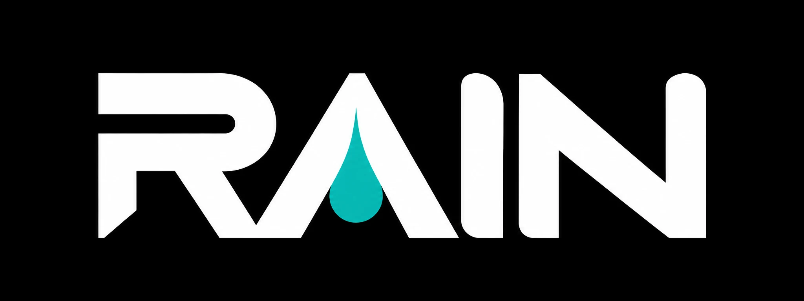

DESCENSO
Explora un océano que nace a tu alrededor. Sin prisa, sin final.
EN DESARROLLO
Marea ya está disponible. Descenso está en desarrollo.
Surfea una ola infinita. Salta, gira y vuelve a intentarlo.
JUGAR →Explora un océano que nace a tu alrededor. Sin prisa, sin final.
EN DESARROLLO